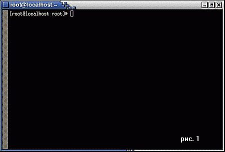
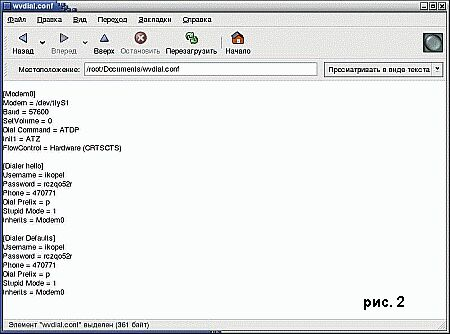
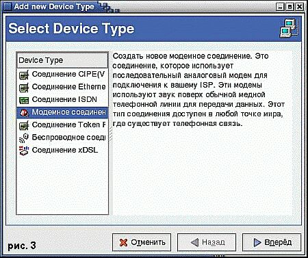
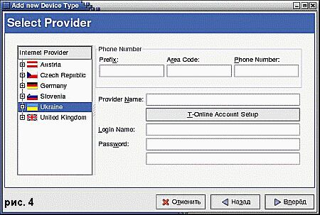
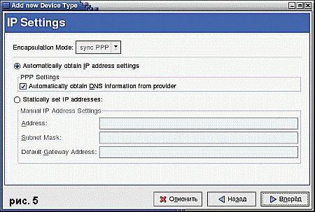
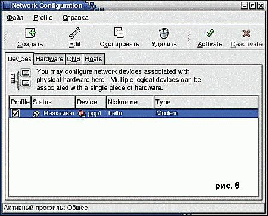
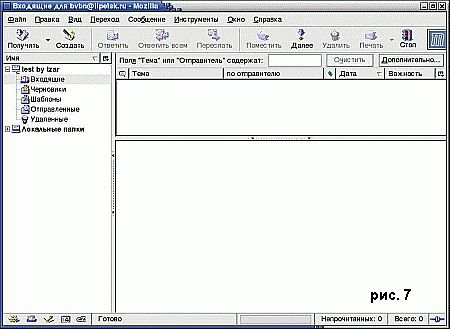
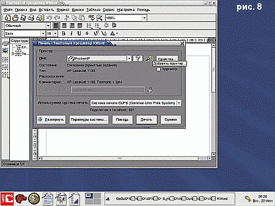

Пингвин в сети
Владимир tz, 07/2003, Компьютер Price
Рано
или поздно перед каждым пользователем встает вопрос о подключении
компьютера к всемирной паутине. Если в Windows для этого никаких
специальных знаний не требуется, то в Unix-системах, и в Linux в
частности, необходимо обладать определенной подготовкой.
Впервые запустив свой ASPLinux, я также был
озадачен: все казалось сложным и непонятным. Потребовались несколько
часов и опытный знакомый для того, чтобы научиться монтировать cd-rom и
floppy-диски, управляться с графическими оболочками, запускать и
настраивать прикладные программы. Теперь, по прошествии определенного
времени, можно сказать, что Linux для меня почти заменил Windows.
Если более детально подойти к процессу
настройки подключения к Интернету, то можно разделить всю работу на два
этапа: "железный" вопрос и создание, а также редактирование файлов
конфигурации.
Проблемы могут начаться из-за того, что
некоторые модемы не поддерживают Linux как операционную систему, то
есть попросту отказываются работать под ее управлением. При
возникновении неприятностей с определением вашей железки, стоит зайти
на сайт www. linmodems.org, где вы можете попробовать раздобыть
драйвера для вашего устройства связи.
Итак, возникает вопрос: какие файлы создавать
и как их редактировать? Для установки подключения потребуются:
wvdial.conf и resolv.conf, оба должны быть помещены в каталог /etc.
Если таковых файлов в папке нет, то их нужно сотворить. Заходим в
терминал (рис. 1), для этого потребуется запустить программу xterm или,
если вы работаете в GNOME, то можно кликнуть правой кнопкой мыши на
рабочем столе и выбрать кнопочку "Создать терминал". Перед нами
появилось что-то похожее на DOS-окошко.

Стоит заметить, что все операции желательно
выполнять как root, в ином случае могут возникнуть проблемы из-за
нехватки прав. Если вышеуказанные файлы отсутствуют, создаем их: пишем
touch/etc/wvdial.conf, нажимаем enter, вводим touch/etc/resolv.conf,
нажимая на ту же кнопочку. Сделано! Кстати, при написании команд нельзя
забывать о пробелах между командой создания и путем хранения, иначе
ничего не получится.
Теперь запускаем утилиту диагностики модема:
wvdialconf /etc/wvdial.conf, после завершения ее работы, если все
прошло гладко, стоит заглянуть в wvdial.conf, там надо найти три
строчки такого содержания:
; Phone = <Target Phone Number>
; Username = <Your Login Name>
; Password = <Your Password>

Надеюсь, все прошло чисто и три строки в
файлике конфигурации найдены. Для работы вам надо их раскомментировать,
то есть удалить все точки с запятой в начале строк. После этого вместо
<Target Phone Number>, <Your login name> и <Your
Password> необходимо указать ваши логин, пароль и телефон.
В результате получаем приблизительно такие строки: Username = myname
Password = 11111
Phone = 999 99 99
Попробуем начать дозвон до провайдера командой
wvdial и получаем в ответ отказ. Проблема в том, что не хватает еще
нескольких строчек, позволяющих более точно настроить параметры
дозвона. Начиная с определения вида соединения и заканчивая указанием
типа набора номера.

[Dialer Defaults] (комментарий: благодаря этой
строке, параметры дозвона будут использоваться по умолчанию, что
позволит использовать wvdial как команду для начала соединения)
Username = myname
Password = 11111
Phone = 999 99 99
Dial Prefix = p (комментарий: уточнение типа набора номера никогда не будет излишне. p - импульсный тип)

Все остальные строки, то есть то, что было
написано самой программой диагностики в этот файл, трогать не нужно.
Теперь wvdial.conf готов.
Код wvdial.conf (рис. 2), достаточный для подключения к Интернету через терминал.
[Modem0]
Modem = /dev/ttyS1
Baud = 57600
SetVolume = 0
Dial Command = ATDP
Init1 = ATZ
FlowControl = Hardware (CRTSCTS)

[Dialer Defaults]
Username = myname
Password = 11111
Phone = 999 99 99
Dial Prefix = p

Закончив с wvdial.conf, переходим к
resolv.conf. В этом файле указываются один или несколько (сколько есть)
DNS-адресов вашего провайдера. Ведь путешествие по сети, то есть
передача и получение информации, осуществляется с помощью DNS-серверов.
nameserver adress
nameserver adress
Например:
nameserver 195.39.824.3
nameserver 195.39.824.4

Этих двух строчек достаточно для полностью
корректной работы команды wvdial. Вводим ее, и подключение начинается.
К плюсам терминального способа я бы отнес скорость использования.
Отключение от Интернета происходит моментально
при закрытии терминала, в котором был запущен процесс wvdial, - дело в
том, что нижеописанный процесс подключения через Мастер прерывается с
замедлением секунд 5-6, что иногда нервирует.
Если у вас нет желания настраивать подключение
через командную строку, то можно попробовать другой способ. В главном
меню во вкладке "Система" запускаем Мастер подключения к Интернету
(рис. 3).
Выбираем тип подключения "Модемное
соединение". Далее выбираем страну провайдера. К моему удивлению,
России в списке не оказалось, но есть Украина, она тоже подойдет. Также
вводим логины, пароли, имена, при этом поле "Area code" можно оставить
пустым, "Provider name" может быть любым, а в "Prefix" лучше поставить
"p", то есть импульсный набор (рис. 4). В "IP settings" оставляем все
как есть (напротив "Automatically obtain DNS information from provider"
должна быть галка) (рис. 5).
Готово! Теперь выбираем в главном меню
"Системные параметры", а потом вкладку "Сеть". Далее активируем
созданное нами подключение, и "дело в шляпе" (рис. 6).
Чтобы отключиться, деактивируем его. Данные об
этом подключении добавляются в уже известный нам wdial.conf, также для
работы соединения нужен resolv.conf вышеуказанного содержания. К слову
сказать, эти два способа подключения к Интернету не исключают друг
друга. И настроив их оба, мы приобретем только больше опыта.

--> Mozilla Mail
Сначала у меня было желание написать о
почтовом клиенте Evolusion, но, к огромному моему сожалению, я
обнаружил в нем серьезный "баг", - компьютер подвисает при попытке
перенастройки данного почтальона, причем, чаще всего это приводит к
неизбежной и некорректной перезагрузке системы. Поэтому попробуем
альтернативный вариант - Mozilla Mail (рис. 7). При первом запуске этой
программы нам предлагается настроить учетную запись электронной почты.
Соглашаемся и указываем свое имя и адрес e-mail. Имя может быть любым,
а вот ящик ваш, личный, уже имеющийся. Следующая менюшка дает право
выбрать тип сервера входящей почты между POP и IMAP. Выбираем в
зависимости от того, какой тип использует ваш провайдер, к слову
сказать, чаще используется POP. Имя своего сервера провайдер обязан вам
сообщить отдельно. Самое сложное пройдено, дальше просто указываем
требующуюся информацию и в конце нажимаем на кнопку "Готово". Сделано,
теперь у нас имеется настроенный почтовый клиент, напоминающий
Microsoft Outlook.
--> Настройка принтера в LINUX
На данный момент LINUX пока еще не обладает
теми игровыми возможностями, что есть у Windows, поэтому уметь
использовать LINUX как рабочую лошадку особенно важно, ведь если нельзя
комфортно играть, то надо качественно работать.
Как ни покажется странным, но LINUX вполне
может сойти за операционную систему для печатной машинки. Набор
текстовых редакторов весьма разнообразен, начиная с KWord и заканчивая
OpenOffice. org. Но после того как текст набран, появляется вопрос: а
как его распечатать?
Для этого надо настроить принтер. Это не столь
просто, поскольку при загрузке системы ваш аппарат может определяться,
но при нажатии кнопки "Печать" ничего не происходит. Следовательно,
надо начинать работать ручками. К слову сказать, один раз настроенный
принтер можно использовать под любой текстовый редактор. Ввиду того,
что почти в любой LINUX-системе должен иметься KWord, настроим принтер
с его помощью.
После загрузки нашего редактора нажимаем на
эмблемку печати и, кликая на картинку с волшебной палочкой, запускаем
процесс установки нового принтера (рис. 8).
Надо полагать, ваш аппарат для печати является
локальным, поэтому ставим соответствующую галочку. Выбрав порт, к
которому подключено устройство, указываем точную модель своего
принтера. Отметив рекомендуемые драйвера, и убедившись, что проверка
прошла нормально, идем дальше. На мой взгляд, установка транспарантов и
квот на печать не нужна, а вот подобрать пользователя для принтера
необходимо. Вот и все, после нажатия кнопочки "Готово" печатная машинка
настроена.
|